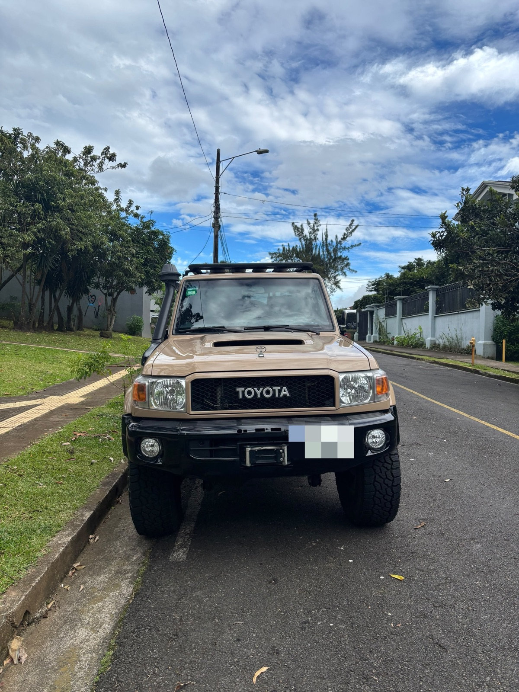
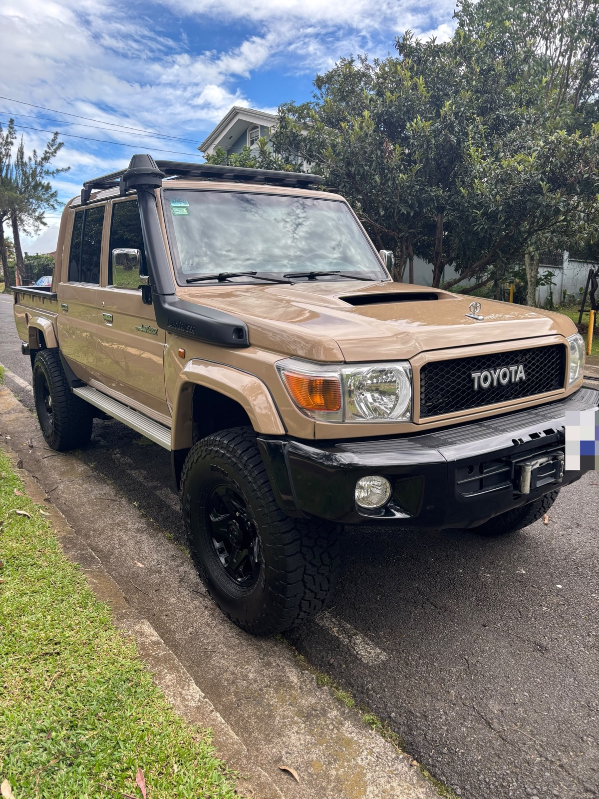
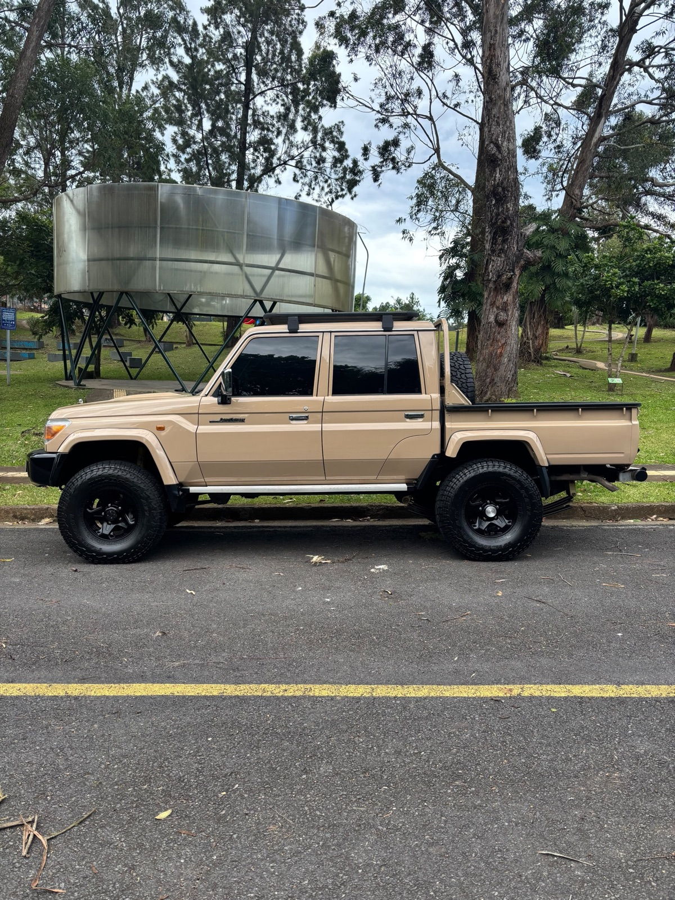
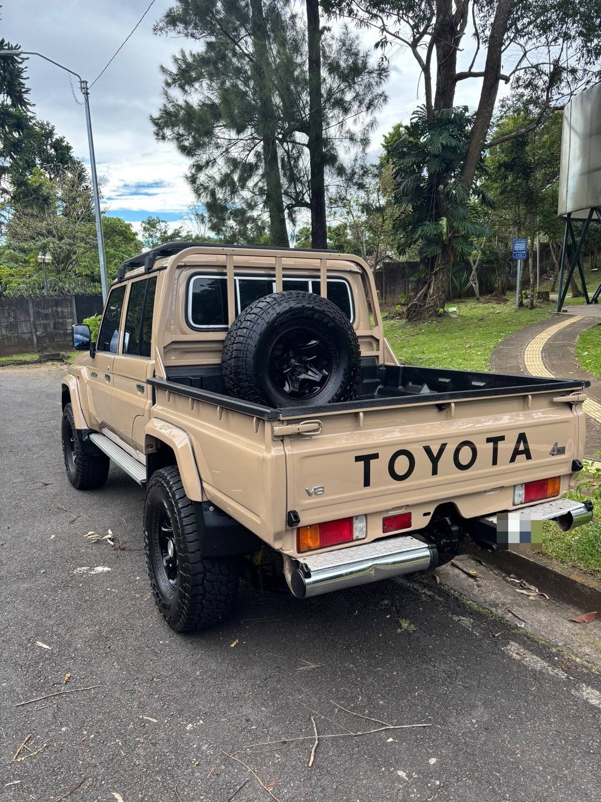
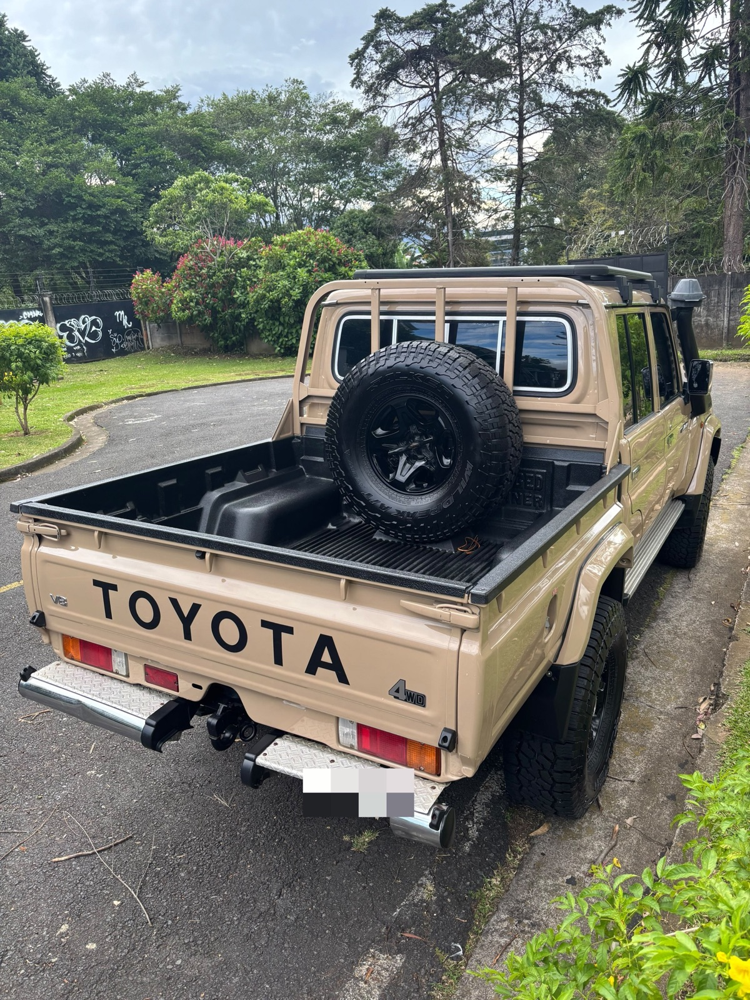
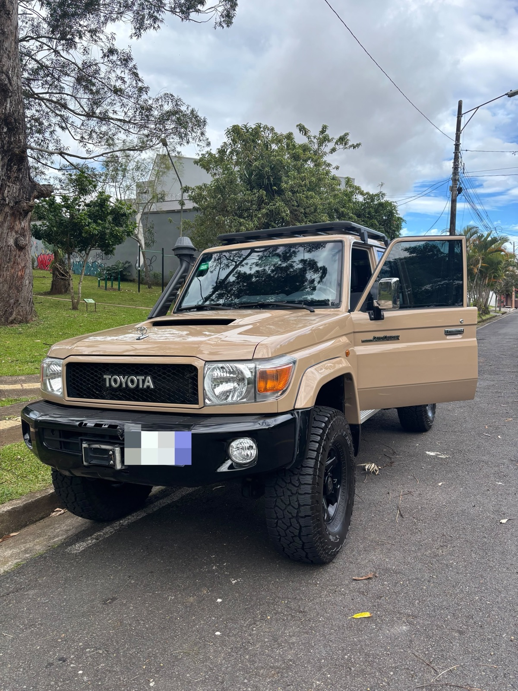

AvailableDisponible
2022 Toyota Land Cruiser 79 Doble cabina V8 · versión Dubai
$75,555 · ₡34,000,000
- YearAño
- 2022
- MileageKilometraje
- 90,000 km
- TransmissionTransmisión
- Manual
- FuelCombustible
- Diésel
- DrivetrainTracción
- 4x4
- SuspensionSuspensión
- Dobinson twin tube
- ColourColor
- Beige
- OwnersDueños
- 1
- LocationUbicación
- San José
I'm a broker: the car belongs to its owner. Reserving means I hold it for you and set up the viewing.Soy intermediario: el auto es de su dueño. Reservar significa que se lo aparto y coordino la visita.
2022 Land Cruiser 79 double cab V8, Dubai version, 90,000 km, one owner, clean title, no accidents. Manual gearbox, Dobinson twin-tube suspension and snorkel.
- One owner, clean title, no accidents
- Dubai version, V8, manual
- Dobinson twin-tube suspension
- Snorkel, roof rack and all-terrain tyres
Land Cruiser 79 doble cabina V8, versión Dubai, 2022, con 90.000 km, un solo dueño, título limpio y sin accidentes. Transmisión manual, suspensión Dobinson twin tube y snorkel.
- Un solo dueño, título limpio, sin accidentes
- Versión Dubai, V8, manual
- Suspensión Dobinson twin tube
- Snorkel, parrilla de techo y llantas todo terreno